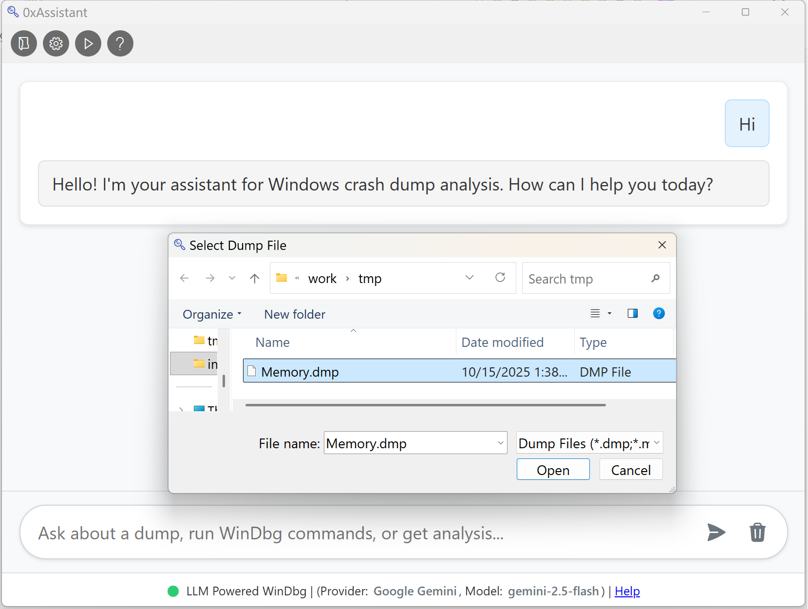

Meet 0xAssistant — a Windows‑native desktop app that brings large‑language‑model assistance to classic WinDbg/CDB crash analysis without changing your workflow.

TL;DR benefits
- 100% Windows‑native: no Python environment or packages needed. No extra front‑ends (no VS Code, Claude Desktop, or Cursor required).
- Full native WinDbg command support: run the exact same commands you already know and trust.
- Intuitive UI: a focused, familiar interface that keeps WinDbg power close at hand.
Why 0xAssistant
Debugging Windows crash dumps is powerful with WinDbg/CDB, but it’s verbose and context‑heavy. 0xAssistant pairs your existing commands with an LLM to summarize, explain, and suggest next steps — while keeping native tooling in the driver’s seat.
- Keep your muscle memory: issue native commands like
!analyze -v,k,lm, and more. - Get AI context: have the model interpret output, propose hypotheses, and recommend the next command.
- Stay in control: you decide when to run commands; the assistant never hides what it’s doing.
Quick start
Prerequisites
- Windows 11 (x64)
- WinDbg installed (from the Microsoft Store)
Using 0xAssistant
- Open a dump as you normally would with WinDbg/CDB.
- Run native commands; ask the assistant to explain output, identify patterns, or suggest the next command.
- Iterate quickly: combine your expertise with AI summaries for faster root‑cause discovery.
What you can do
- Drive classic investigations with Windbg command(
>>!analyze -v), stack walks(>>k), memory inspection(>>db), and module/version checks(>>lm). - Ask for plain‑English explanations of cryptic output, failure buckets, and call stacks.
- Explore hypotheses: “What looks suspicious?”, “Which thread likely faulted?”.
Feedback
- Try it and share your experience — what helped, what’s missing, and what would save you more time.
- Share with colleagues who live in WinDbg/CDB and would benefit from an AI co‑pilot.
- For product questions or early access updates, reach out through your usual channel.
0xAssistant aims to amplify, not replace, your WinDbg skills. If you’re already fast in native tools, you’ll feel at home — with a helpful co‑pilot when you want it.